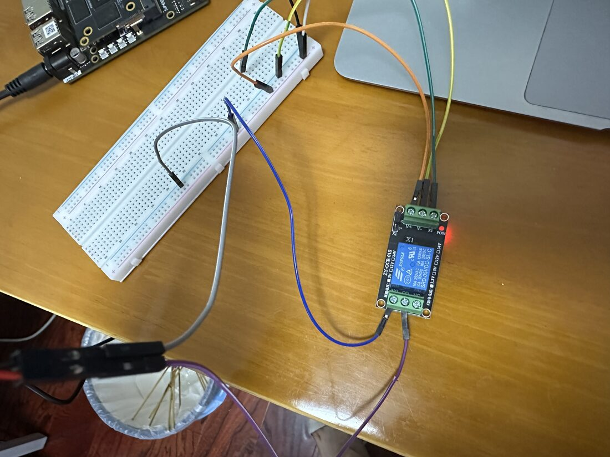
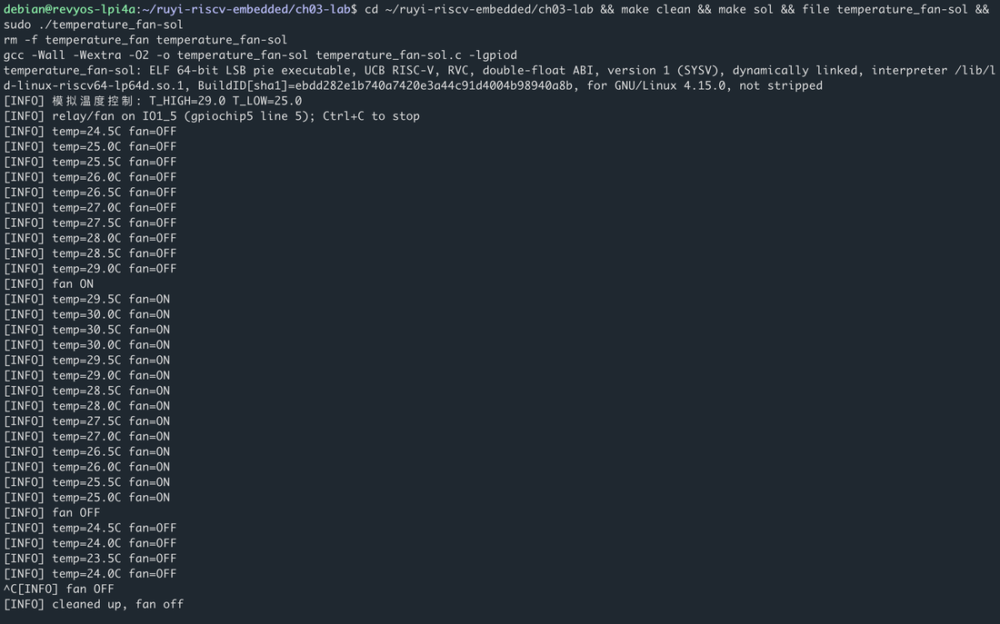

第三章 · GPIO 与执行器
假温度驱动真风扇
软件里的滞回第一次碰到硬件：gpiod 拉继电器，风扇真的转。
- 用户态
gpiod写 IO1_5，继电器切风扇电源。 - 温度仍是程序里走的模拟曲线，默认 29 / 25。
- 超阈值转、降到低阈值停；Ctrl+C 先关风扇。
本章实验
接好继电器与风扇。终端看到 fan ON / fan OFF，耳朵听到风扇跟日志走。



第三章 · GPIO 与执行器
软件里的滞回第一次碰到硬件：gpiod 拉继电器，风扇真的转。
gpiod 写 IO1_5，继电器切风扇电源。接好继电器与风扇。终端看到 fan ON / fan OFF，耳朵听到风扇跟日志走。

